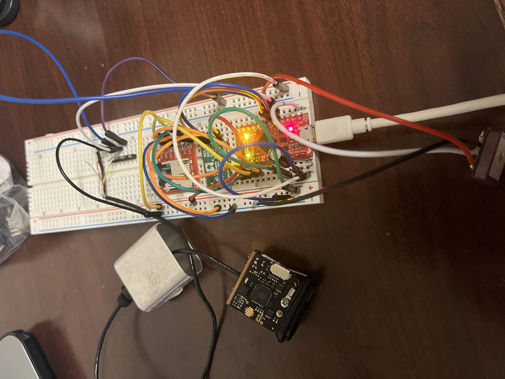
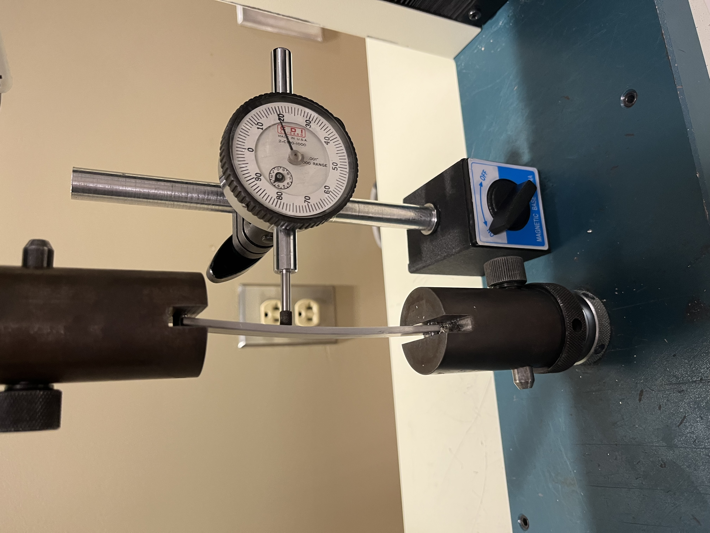
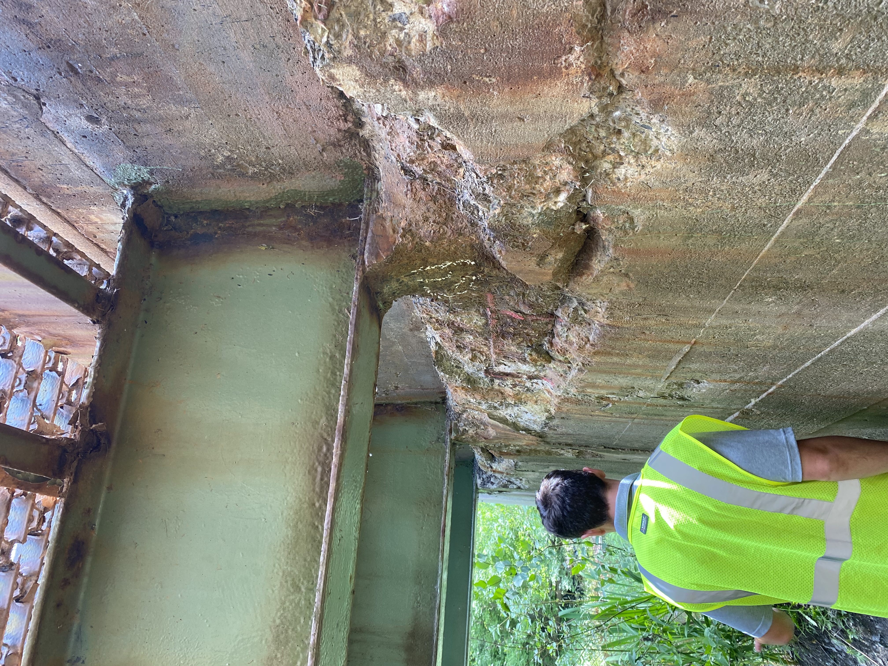
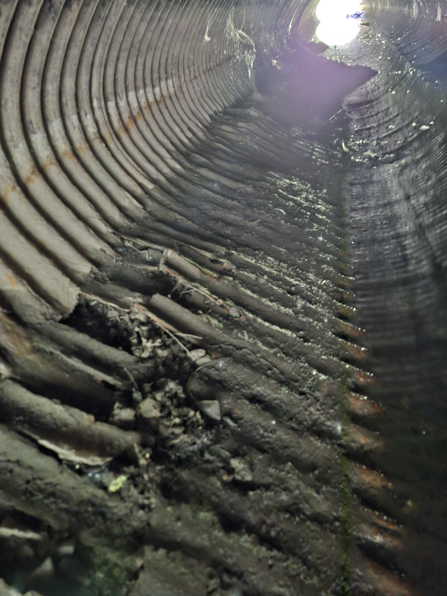
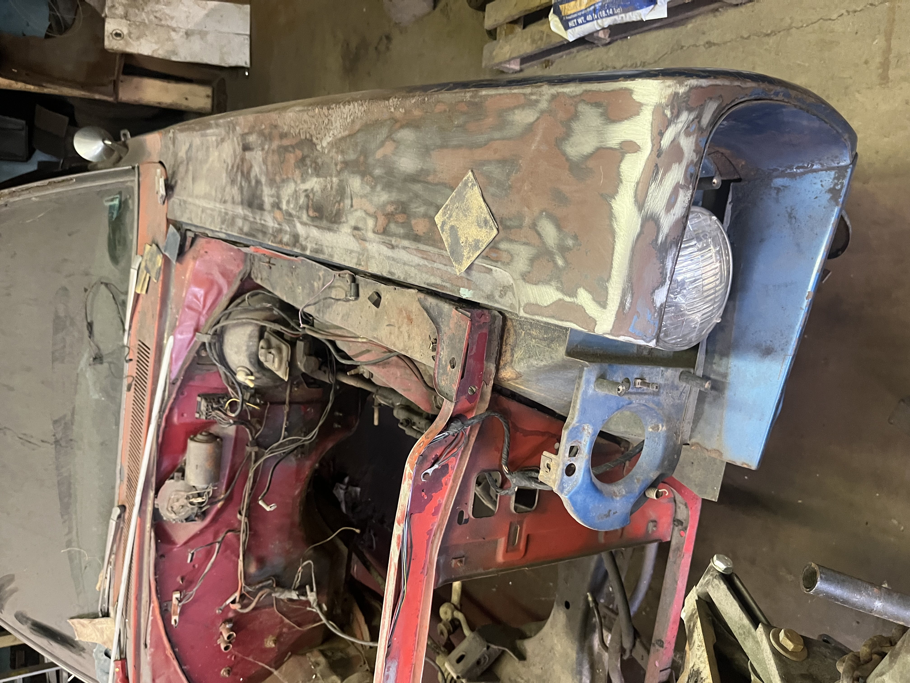

Experience
Sept 2024 – Present

- Created custom PCBs in KiCad to simplify sensor integration and reduce wiring complexity.
- Added new hardware including a LW20/C laser rangefinder (I²C) and a compact GPS module (UART).
- Improved altimeter accuracy to ±1 cm and redesigned its housing in SolidWorks for seamless drone integration.
- Programmed microcontrollers (XIAO SAMD21, ProMicro, Feather M0) with PlatformIO and Arduino IDE.
- Enhanced onboard data logging with tilt compensation, Kalman filtering, and timestamped file organization.
Aug 2024 – Present

- Guided students through labs on material behavior using Tinius Olsen testing machines.
- Connected hands-on experiments to core concepts like statics, stress analysis, and mechanical failure.
- Supported students in analyzing stress–strain data and evaluating properties such as Young's and shear modulus.
May 2024 – Aug 2024


- Conducted load analyses on traffic signal structures, considering safety factors for wind, ice, and weight.
- Helped streamline reporting for inspections of 192 bridges and 344 culverts using SAP and Excel.
- Reviewed electrical and structural schematics for signals and redesigned parking layouts in AutoCAD.
Jun 2018 – Present


- Assisted in excavation and installation of residential and commercial asphalt driveways.
- Operated and maintained heavy machinery including loaders, pavers, excavators, and trucks.
- Restored a 1969 Dodge Coronet by rewiring electrical systems, welding panels, and replacing key components.